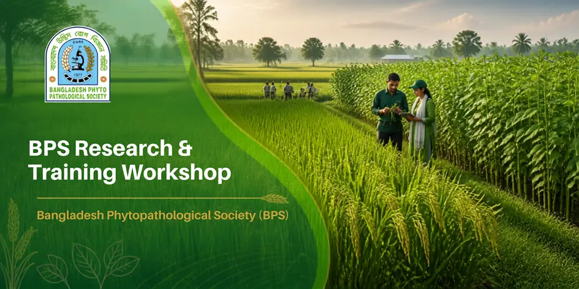

The Bangladesh Phytopathological Society (BPS) is a science-based professional society dedicated to promoting phytopathological science in Bangladesh — spanning mycology, bacteriology, virology, nematology, phytoplasmology, plant disease management, plant health and crop protection.
Creating an environment for growing healthy plants for a sustainable future.
Engaging plant pathology professionals to advance plant health through innovative and environmentally sustainable practices.
BPS members conduct research spanning the full breadth of phytopathological science.
Explore crop diseases, pathogens, symptoms and science-based management recommendations.
Join researchers, academics, and agricultural professionals advancing plant health nationwide.

BPS supports scientific capacity building through disease diagnosis workshops, laboratory methods training and research methodology courses for early-career plant pathologists.
[Institutional partner list to be confirmed and updated by BPS Administration]
Reach out to our office at BARI, Gazipur — our team is happy to help with membership, research or event inquiries.